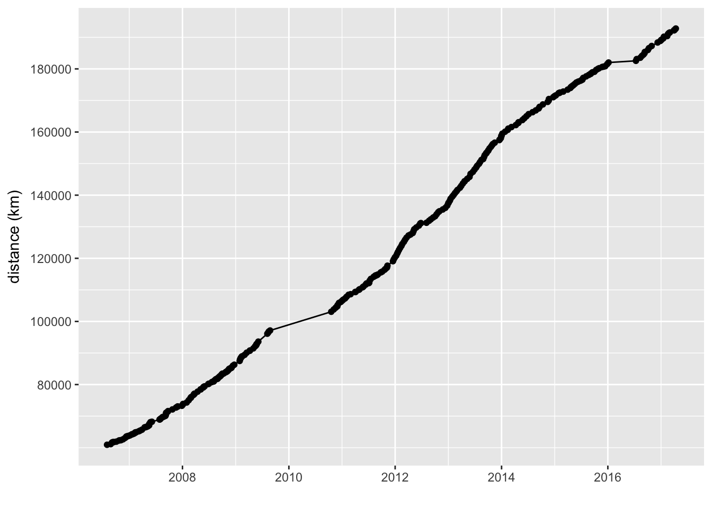
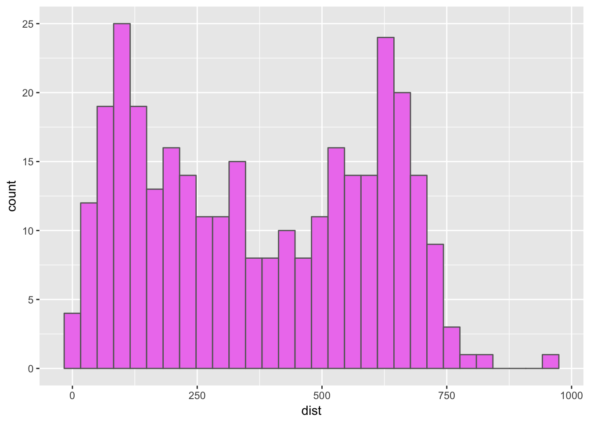
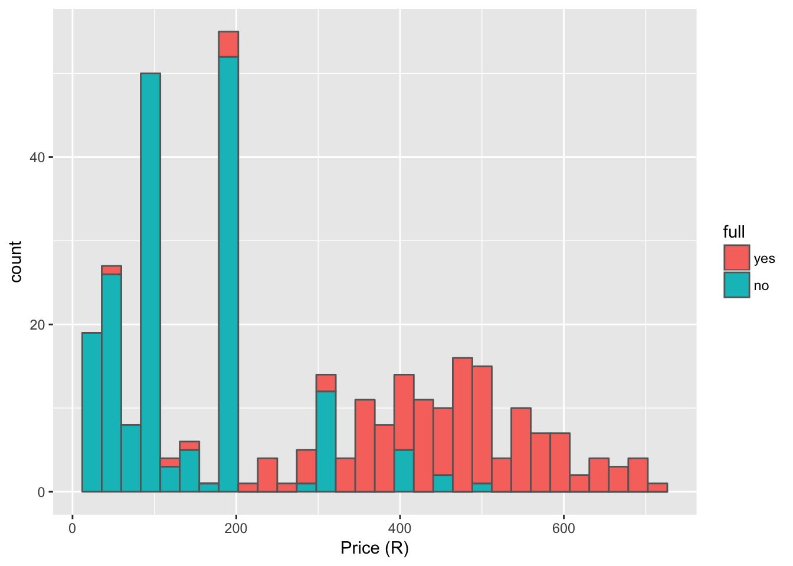

Chapter 6 Petrol prices
Of interest to everyone is the price of petrol. Both how much we have spent and how much we have to spend every time we pull up to the station. First we see a lolliplot of spending behaviour.
# Calculate total amount spent
petrol$cost_total <- cumsum(petrol$cost)
# Lolli plot
ggplot(data = petrol, aes(x = date, y = cost)) +
geom_point() +
geom_segment(aes(xend = date, y = 0, yend = cost)) +
labs(y = "cost (R)", x = "")
ggplot(data = petrol, aes(x = date, y = cost_total)) +
geom_line() +
geom_point() 
And then the price per litre averaged per month.
# Price/ litre/ month
petrol_monthly <- petrol %>%
select(-full, -date, -year) %>%
group_by(month) %>%
summarise_all(mean) %>%
mutate(price_litre = cost/litre)
# Fill in missing months
month_index <- data.frame(month = seq(petrol_monthly$month[1], petrol_monthly$month[nrow(petrol_monthly)], by = "month"))
petrol_monthly <- merge(petrol_monthly, month_index, by = "month", all.y = TRUE)
petrol_trend <- lm(petrol_monthly$price_litre ~ seq(1:nrow(petrol_monthly)))
petrol_augment <- augment(petrol_trend)
petrol_tidy <- tidy(petrol_trend)
petrol_glance <- glance(petrol_trend)
petrol_tidy$estimate[2]*12## [1] 0.7226146# R 0.72/ month
# Line graph
ggplot(data = petrol_monthly, aes(x = month, y = price_litre)) +
geom_line() +
geom_point() +
geom_smooth(method = "lm") +
geom_text(aes(x = as.Date("2009-01-01"), y = 13,
label = paste0("Increase = R", round(petrol_tidy$estimate[2]*12, 2), " /month"))) +
# geom_point(data = petrol[187,], colour = "red")
# scale_y_continuous(breaks = seq(80000, 200000, 20000)) +
labs(y = "price/ litre", x = "")